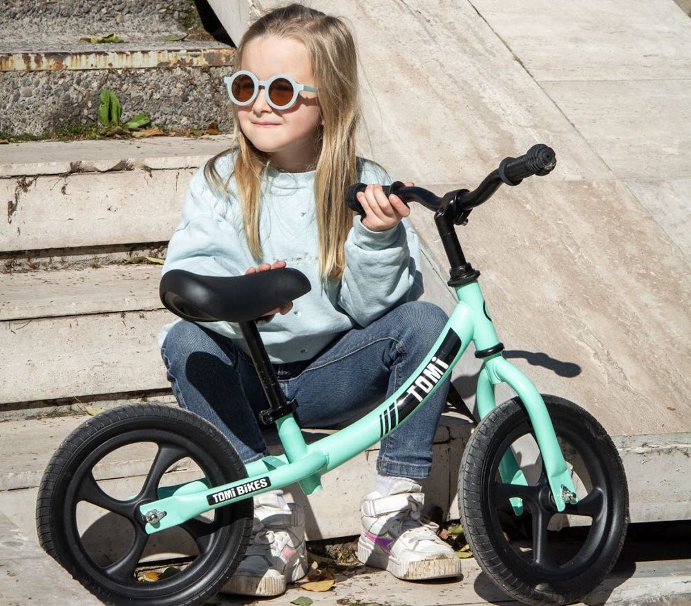
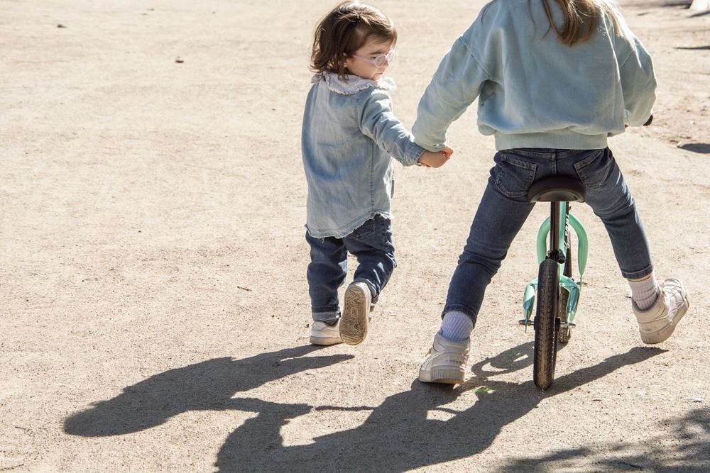
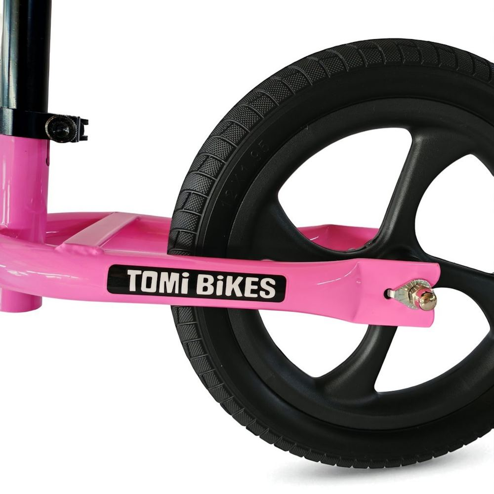
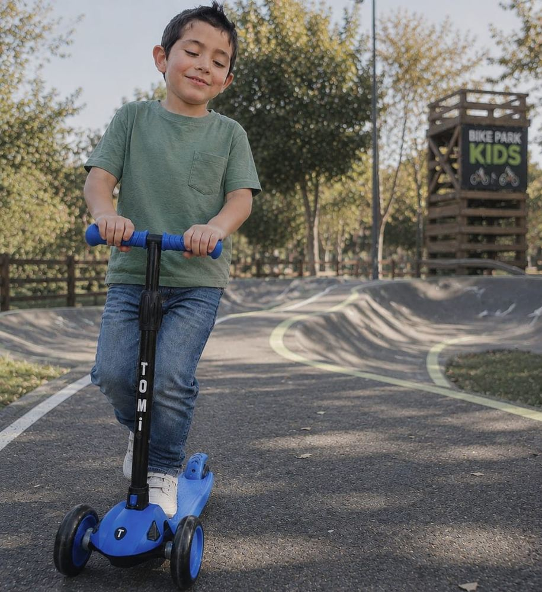
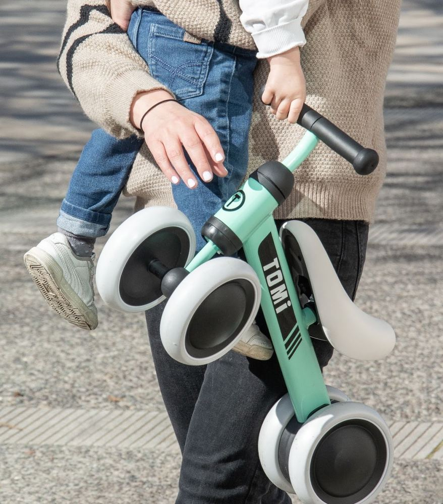
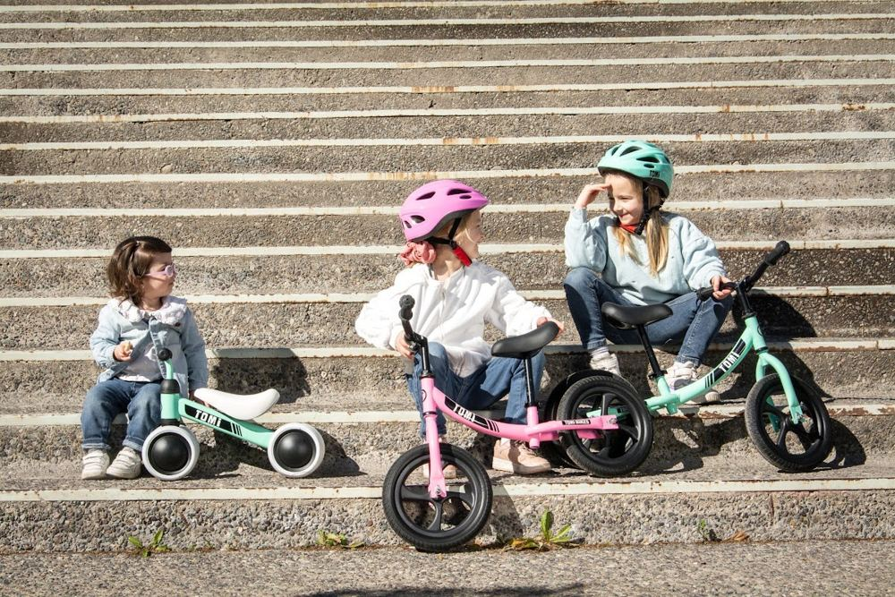
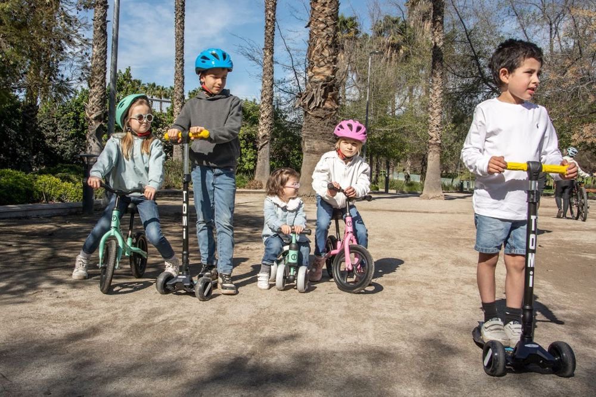
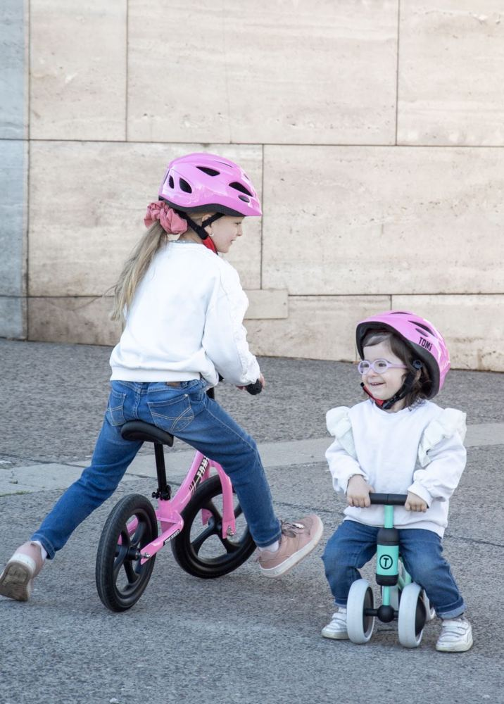
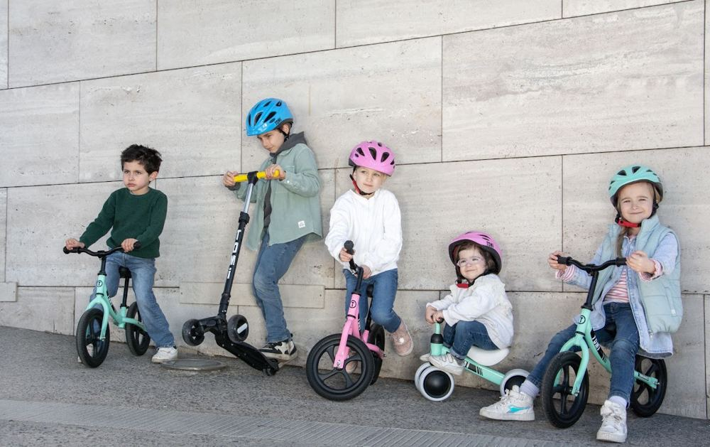

Bicicletas de equilibrio · Scooters · Triciclos
Grandes momentos empiezan con pequeños pasos… y ruedas
Vehículos livianos y fáciles de armar para niños de 1 a 8 años. Apostando por una infancia al aire libre.
- Bicicleta 2,9 kg
- Triciclo 1,8 kg
- Armado sin herramientas
Guía por edad y altura
¿Cuál es la TOMI para tu peque?
Mueve los controles y te mostramos qué le queda bien hoy, según las medidas de cada producto.
Catálogo
Conoce nuestros productos

2 a 5 años · Aro 12"
Bicicleta de equilibrio TOMI
Diseño sin pedales, ideal como primer paso antes de una bici con rueditas. Favorece la motricidad y el equilibrio, y con 2,9 kg es súper liviana.
- Edad recomendada
- 2 a 5 años
- Altura del niño/a
- 80 a 105 cm
- Altura del asiento
- 30 a 40 cm
- Peso máximo de uso
- 30 kg
- Aro
- 12"
- Peso del producto
- 2,9 kg
- Material
- PP + acero inoxidable
- Colores
- Menta, azul y rosado


Más que una bici
Su primera gran aventura
- Mejora el equilibrio y la coordinación motora.
- Refuerza la confianza e independencia al avanzar por sí mismos.
- Fortalece la motricidad y los músculos de piernas y brazos.
- Es una forma divertida y segura de estar activos al aire libre.

2 a 8 años · hasta 50 kg
Scooter BJ TOMI
Crece con tu peque: el manubrio se ajusta en 4 alturas y las ruedas tienen luces LED que funcionan sin pilas.
- Se arma en segundos, sin herramientas.
- Ruedas con luces LED que funcionan sin pilas.
- Manubrio ajustable en 4 alturas.
- Fácil de transportar gracias a su sistema desmontable.
- Soporta hasta 50 kg.
- Edad recomendada
- 2 a 8 años
- Carga máxima
- 50 kg
- Altura del manubrio
- 57 a 77 cm
- Peso
- 2,5 kg
- Medidas en uso
- 57 × 28 × 77 cm
- Medidas de la caja
- 17 × 29 × 58 cm
- Material
- Aluminio, polipropileno y fibra de vidrio reforzada

12 a 24 meses · 1,8 kg
Triciclo Mini Ride TOMI
El compañero perfecto para las primeras aventuras. Invita a explorar mientras aprenden a mantener el equilibrio, y con solo 1,8 kg lo llevas fácil al parque o a casa de los tatas.
- Ligero y resistente.
- Ayuda a desarrollar equilibrio, fuerza y coordinación.
- Ruedas EVA ecológicas, suaves y silenciosas.
- Armado fácil y rápido, sin herramientas especiales.
- Edad recomendada
- 12 a 24 meses
- Altura del niño/a
- 75 a 95 cm aprox.
- Altura del asiento
- 30 cm
- Peso máximo
- 25 kg
- Ruedas
- EVA 6"
- Peso del producto
- 1,8 kg
- Material
- PP + acero + aluminio + nylon
Talla ajustable
Casco TOMI para niños
El complemento para cada etapa: bicicleta, scooter o triciclo. Elige el color que combine con su TOMI.
Lado a lado
Compara y elige
Triciclo Mini Ride |
Bici de equilibrio |
Scooter BJ | |
|---|---|---|---|
| Edad | 12–24 meses | 2–5 años | 2–8 años |
| Altura del niño/a | 75–95 cm | 80–105 cm | Manubrio 57–77 cm |
| Peso máximo | 25 kg | 30 kg | 50 kg |
| Peso del producto | 1,8 kg | 2,9 kg | 2,5 kg |
| Ruedas | EVA 6" | Aro 12" | Luces LED sin pilas |
| Colores | Menta | Menta, azul, rosado | Azul, rosado |
| Precio | $34.990 | $49.990 | $39.990 |
Comunidad TOMI
Infancia al aire libre




Antes de comprar
Preguntas frecuentes
¿Desde qué edad puede usar una TOMI?
Desde los 12 meses con el Triciclo Mini Ride (75 a 95 cm de altura). Entre 2 y 5 años la bicicleta de equilibrio aro 12" (80 a 105 cm), y entre 2 y 8 años el Scooter BJ, que soporta hasta 50 kg.
¿Necesito herramientas para armarlos?
No. El scooter se arma en segundos sin herramientas y el triciclo se arma de forma rápida sin herramientas especiales.
¿Por qué una bicicleta sin pedales?
La bicicleta de equilibrio es el primer paso antes de la bici con pedales: mejora el equilibrio y la coordinación, y refuerza la confianza al avanzar por sí mismos.
¿Las luces del scooter usan pilas?
No. Las ruedas tienen luces LED que se encienden con el movimiento y funcionan sin pilas.
¿Dónde compro?
Todas las compras se realizan en nuestras publicaciones oficiales de Mercado Libre, con el pago y despacho que ofrece la plataforma.